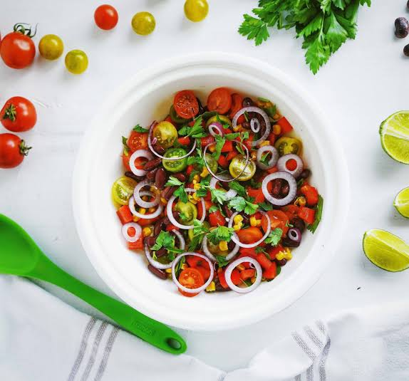

Ensalada mediterránea

La ensalada mediterránea es una receta sencilla y deliciosa que combina ingredientes frescos y aromáticos. Gracias al aceite de oliva, el queso y las verduras, se convierte en una opción perfecta para el almuerzo o la cena. Además, es una preparación muy versátil, ya que puedes modificar los ingredientes según tus preferencias.